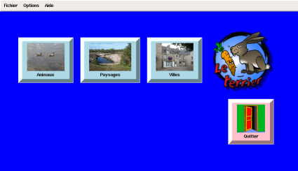

| Accueil | Activités | Bilan | Options / Réglages | Développeurs |
|  |
Ce logiciel utilisable dès 2 ans est un logiciel d'apprentissage de maîtrise de la souris, mais il est aussi un logiciel de présentation d'images à découvrir au moyen de la souris.
Il a été conçu pour l'apprentissage du langage. Ainsi, les enfants peuvent :
Munissez-vous d'un appareil photo numérique et foncez !